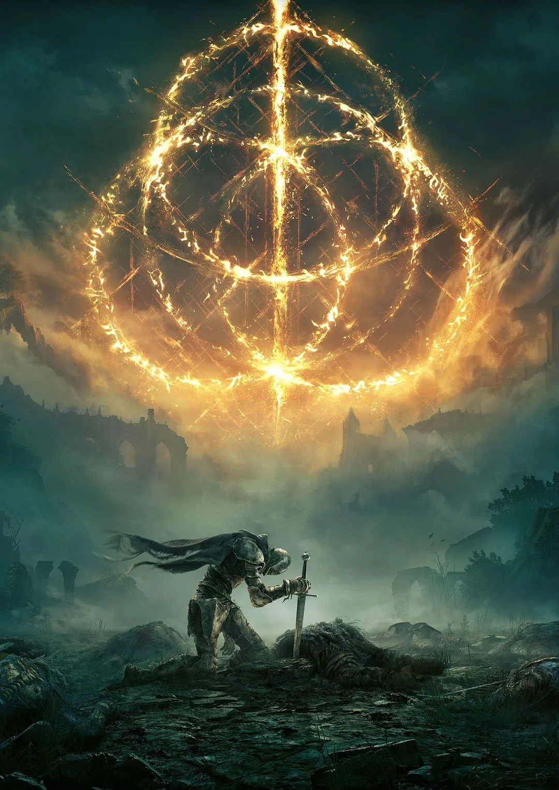
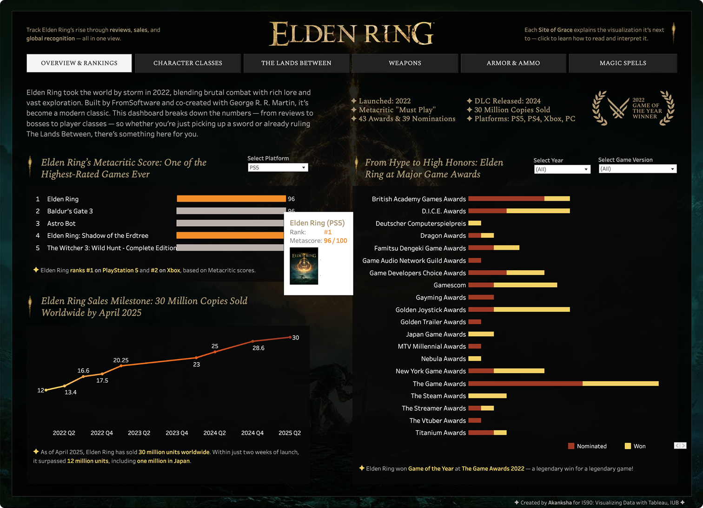
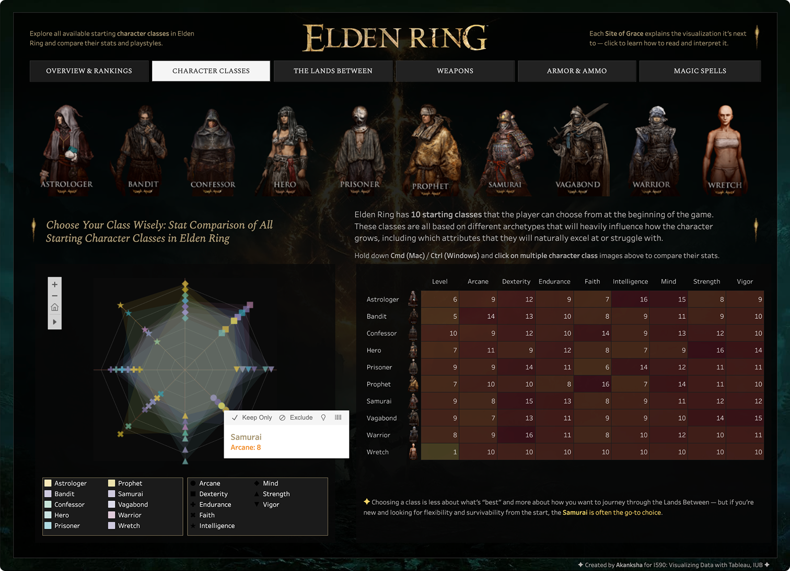
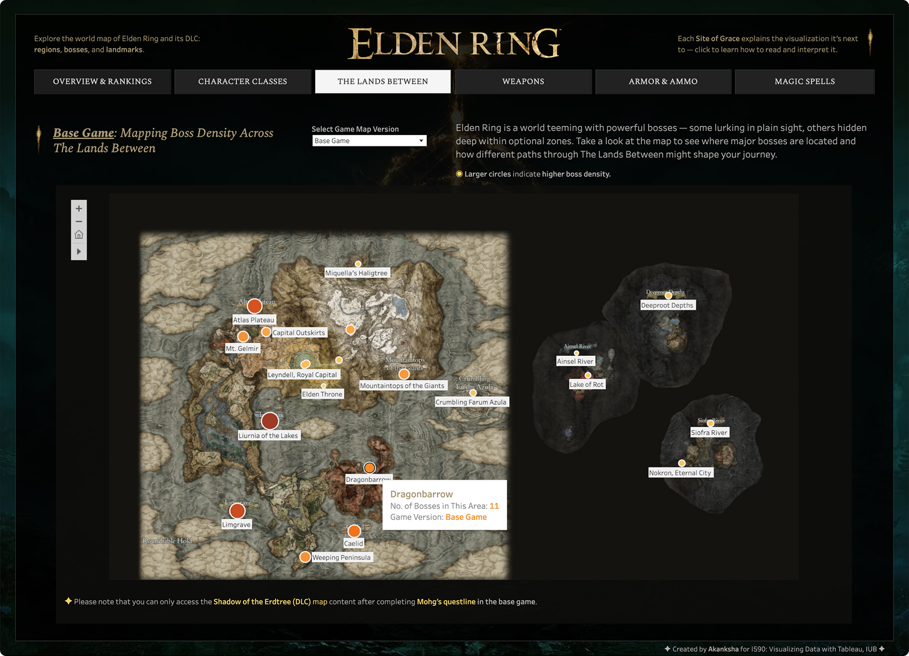
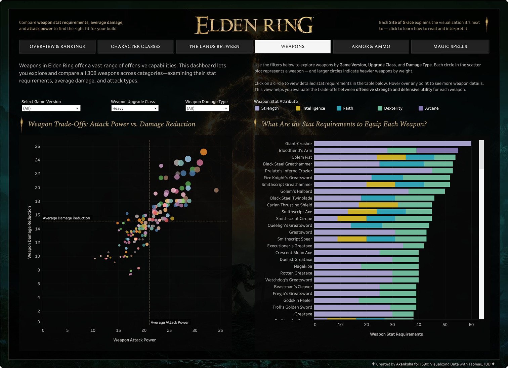
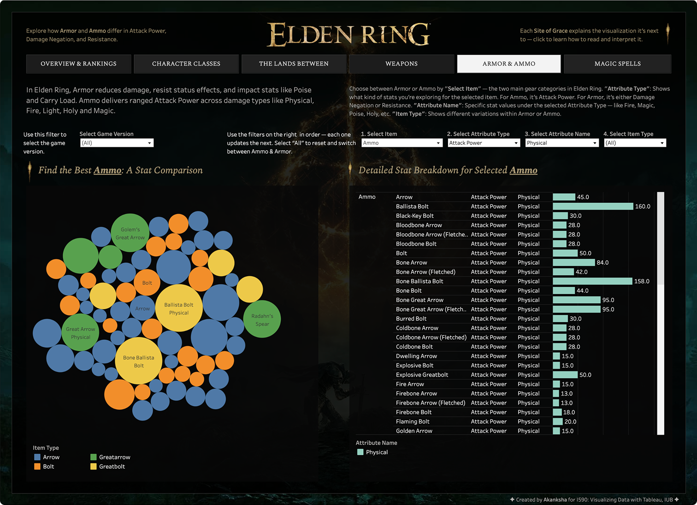
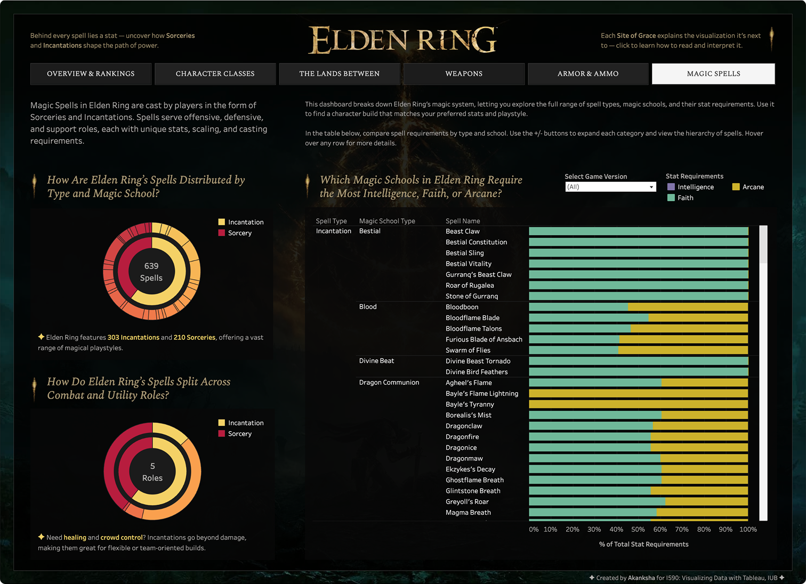

Elden Ring
A visual data guide to the Lands Between using Tableau.
For my final project in a Data Visualization course, I chose to explore Elden Ring — an open-world
action RPG known for
its deep mechanics and massive world. As a fan of the game, I wanted to use data to make its
complexity easier to
understand.
Using Tableau, I created interactive visualizations to help players explore things like armor stats,
boss locations, and
item scaling.
The goal was to turn dense game systems into clear, useful insights that match different playstyles —
whether you're a
new player or just curious about how the game works.
it's all about elden ring
To ensure full coverage of Elden Ring and its 2024 expansion, I used a combination of
these datasets on Tableau:
Base Game Dataset
I used a Kaggle dataset with 15+ CSV
files which had gameplay data on
weapons, bosses,
NPCs, locations, and more. The data came from an
unofficial open-source Elden Ring API.
Shadow of the Erdtree DLC Dataset
I added a second Kaggle dataset covering
new bosses, items, and map regions from the Shadow
of the Erdtree expansion. It was sourced from the Fextralife Wiki and updated on Kaggle.
Awards & Recognition
I scraped award data from Wikipedia to show how Elden Ring
performed
at major game award shows and highlight its wins and nominations in different categories.
Metacritic Score Comparison
I scraped data directly from Metacritic to compare Elden
Ring's
rating with other top PlayStation and Xbox titles,
showing its lasting critical acclaim.
Sales Performance
To show how the game's popularity grew, I used data from Statista
to
visualize Elden Ring's
sales over time—including its recent 30 million units sold milestone.
Boss Map Visualization
I manually mapped boss locations using FextaLife's boss data and a
clean,
label-free Elden Ring map to visualize their distribution across the game world—including new DLC
regions.

The dashboard is organized into thematic sections that guide users through Elden Ring's
complexity using interactive
visualizations.
overview & Rankings
How Elden Ring stacks up across platforms and award shows.
This page shows Metacritic scores for games with filters for
PlayStation and Xbox platforms. It also compares Elden Ring's
awards versus nominations across game categories, with filters for years and versions (base game and
DLC). There's a line chart as well showing Elden Ring's sales milestones over time.
Interactive filters and color highlights make the dashboard easy to
explore, and users can hover over charts to see
more details as well.

Character classes
Learning about starting player character classes in Elden Ring.
Elden Ring starts players off with 10 different character classes,
each with unique stat distributions that shape
playstyle, combat, and progression.
I created visualizations that let users compare classes using table
charts, spider charts, and multi-select filters to
explore different stats side-by-side.

The lands between
Where are the Elden Ring bosses? Exploring density across the lands between.
I created custom maps showing boss density across Elden Ring's
world using circle markers—larger circles mean more
bosses in that area. A filter lets players switch between the base game map and the DLC map for easy
comparison.
This feature helps users decide where to go and plan their exploration
based on boss density, so they can choose areas
that match their preferred challenge level.

Weapons overview
Exploring the balance between weapon power, weight, and upgrades for better gameplay
choices.
Elden Ring features over 300 weapons, each with multiple upgrade
types (Heavy, Keen, Occult, etc.) and levels, making
direct comparison complex. To simplify, I grouped all upgrade levels by weapon type, focusing on their
overall potential
without clutter from upgrade increments.
This page features scatter plots comparing weapon damage versus
defense, with circle size indicating weight, plus
filters for upgrade type and damage category to help users explore weapon trade-offs.
It also has a split bar chart to show stat requirements per weapon across
different categories.

Armor & Ammo
A closer look at armor and ammo strengths for optimized builds.
This page lets users compare armor and ammo items based on
core stats like attack power for ammo and damage
resistance for armor. Each bubble represents an item, sized by its main stat, making it easy to spot
powerful gear.
Filters allow users to switch between ammo and armor views, while detailed
stat breakdowns appear alongside to help
quickly evaluate item strengths.

Magic Spells
Comparing Elden Ring's sorceries and incantations to guide caster builds.
Elden Ring features two main categories of magic: Sorceries and
Incantations, each with distinct roles and mechanics.
I have added visualizations that help players compare their utility roles
and attribute requirements to
better decide which magic path fits their
preferred playstyle, optimizing their character build from early stages onward.

What I learned
This was a really fun project to work on. I genuinely enjoyed exploring the data behind
one of my favorite games—Elden
Ring, which I've easily spent over 200 hours playing.
Originally, I planned to include a lot more in-game data but I had to scale back because of how messy that data was. In a way, it was a good reminder of something one of my favorite Elden Ring bosses once said:
Originally, I planned to include a lot more in-game data but I had to scale back because of how messy that data was. In a way, it was a good reminder of something one of my favorite Elden Ring bosses once said:
"Put these foolish ambitions to rest, foul Tarnished!"
— Margit, the Fell Omen, Elden Ring
— Margit, the Fell Omen, Elden Ring